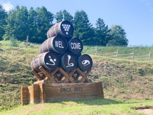
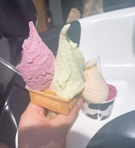

北海道の中でも有名な”富良野”。名前を聞いたことがある人も多いのではないでしょうか。
富良野に行ったらぜ立ち寄ってほしいおすすめの場所を紹介します。
おすすめ１ 富良野ワイン工場
ここでは富良野ワインを作っている工程を見ることができます。ここでしか買えないワインがあります。また、ワインの試飲もできるのでぜひ立ち寄ってみてください。
おすすめ２ ファーム富田

富良野と言えば、”ラベンダー”。様々な種類のラベンダーや、お花畑が見られます。映え写真を撮るならここ！
ラベンダーグッズもたくさん置いてあり、お土産に最適！大好きなあの人への贈り物にいかがでしょうか？
おすすめ３ とみたメロンハウス

富良野と言えば、”メロン”も有名です。富田ファームの隣に位置するとみたメロンハウスでは、おいしいメロンがいただけます。とろける甘さに頬が落ちること間違いなし！メロンを使ったスイーツもたくさん揃えてあり、満足度No.1！
おすすめ４ 富良野チーズ工房
ここではチーズを作っている工程が見られます。２階ではチーズの試食や、たくさんの種類のチーズが販売されています。横のお店では、ここで作っているチーズを使ったピザや、富良野で作っている野菜や果物を使ったジェラートが売っています。わたしのおすすめは、「とうきび（とうもろこし）」味のジェラートです！
最後にクイズを解いてみてね！